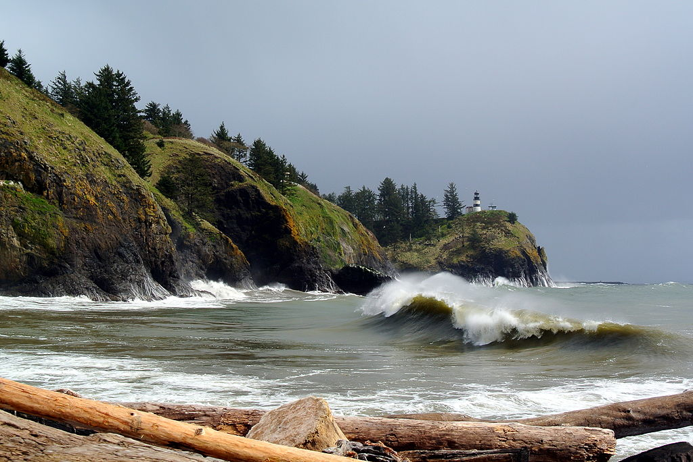

Area Overview
PACNW is one of the best areas for outdoor enthuziest in America; the metopolitan area of Seatec
is surrounded by mountains and lush greenry and provides numerous activities throughout the year,
form mild to wild. The Pacific Northwest is a region in North America that has various defining
boundaries but is undeniably linked by the Pacific Ocean and the Cascade Mountains - a series of volcanoes
stretching from Lassen Peak in northern California to Mount Garibaldi in southern British Columbia.
National Parks
The amazing beauty of nature, its uniqueness and wilderness is now preserved by the government
in various parks, recreation areas, nature reserves and wildlife refuges. National Parks became
extremely popular lately among residents and tourists of the areas of their location, attracting
hundreds of millions of visitors attending the national parks each year. They became for people a
way to escape from everyday bustle and routine life and to reunite with nature, enjoying the
unforgettable, breathtaking landscapes and various outdoor activities which these parks may offer.

State Parks
The Washington State Park System is a set of state parks owned by the state government of Washington, USA.
They are managed by the Washington State Parks and Recreation Commission. As of 2012, the parks are
primarily funded through usage fees. There are over 100 parks throughout the state, including
19 marine parks and 11 Historical Parks.
No matter what type of outdoor experience you are looking to have,
state parks have you covered. No one knows that better than State Park Commissioner Mark O. Brown,
all 124 in his first six years as commissioner. “There’s iconic Native American rock art at Columbia
Hills, an astronomical observatory in Goldendale. There’s entire mountains, pieces of significant
military history. One of the most complete coastal fortifications left standing at Fort Columbia;
one of the most complete lighthouse keep compounds on the West Coast at Cape Disappointment.
We have cabins and yurts, mountain top lookouts, campgrounds, lakes, rivers. Unique geological
features like Beacon Rock State Park and Steamboat Rock near Grand Coulee.”
